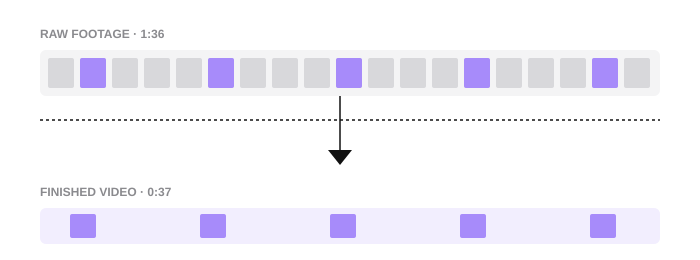
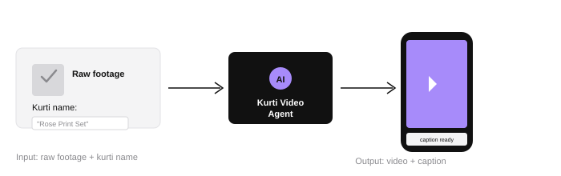
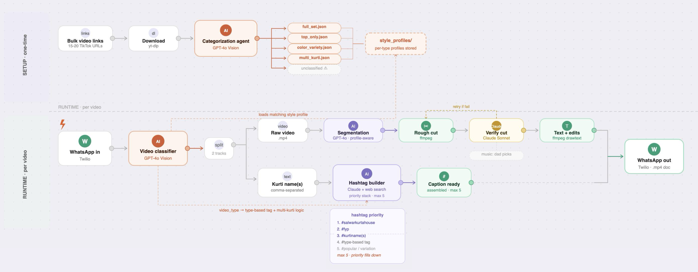
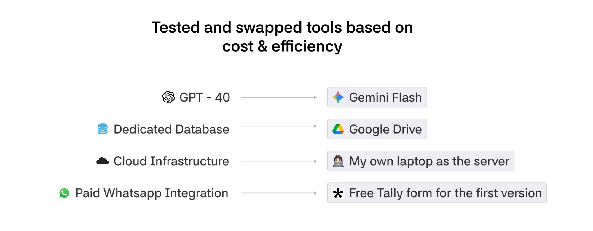
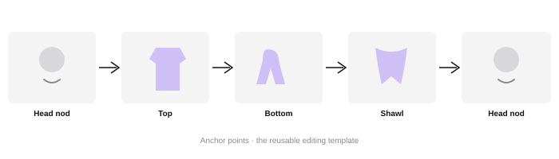
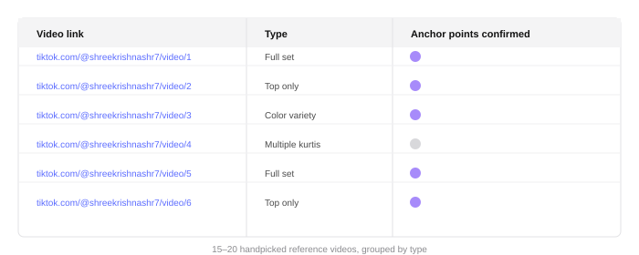
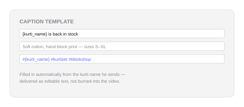
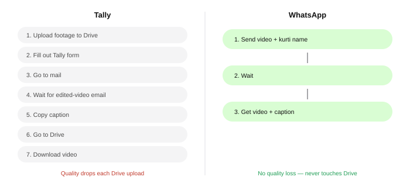

Case Study — AI × Product Design
Kurti Video Agent: Turning raw footage into TikTok-ready videos in 7 minutes
Cut editing time from 1–2 hours to about 7 minutes, with ~95% fewer caption errors.
Overview
Raw footage in, a TikTok-ready video and caption out — in about 7 minutes.
The Kurti Video Agent takes long, unedited product footage and a kurti name, then returns a short-form video with a ready-to-copy caption. It classifies the footage, uses editing patterns learned from reference videos, selects and assembles the best clips, then delivers the finished content through WhatsApp — reducing the process from 1–2 hours to around 7 minutes while keeping the style recognizable to the person who originally created it.

1:36 of raw footage, cut down to a 37-second edit.
Context & problem
So my dad is a TikToker.
He runs a clothing business in Nepal and has built an audience of around 15,000 followers by making videos about the kurtis he sells.
When I lived in Nepal, I helped film and edit those videos. After I moved to New York, I taught him how to do everything himself.
I was proud of him, but the process took a lot out of his day:
At first, the problem looked simple: make video editing faster.
Once I started working on it, I realized the system would need to understand how he edits, what information matters in each video and which decisions should remain under his control.
Idea
Take a raw product video and a kurti name. Return a TikTok-ready edit with a caption.

I focused on one creator and one repeatable workflow so I could test the idea before investing in a larger system.

Challenges
1. Building it on a small budget.
This was a passion project, so I wanted to prove the agent could work before paying for expensive models and infrastructure.

Instead of asking AI to scan my dad's entire TikTok account, I handpicked 15–20 strong reference videos and organized them in a spreadsheet. This made the workflow faster, cheaper and easier to control.
These decisions kept the first version close to $0 per month while I tested the core idea.
2. Teaching AI how to edit like him.
My first attempt used reference videos and timestamps to tell the AI where to cut. But every recording had different timing, so the results were inconsistent.
I shifted from timing references to visual anchor points. For a full kurti set, the agent learned to look for:

These anchor points became a reusable editing template. I also grouped the reference videos by product type, so the agent could classify new footage and apply the most relevant editing pattern:


Instead of asking the AI to "make a good video," I gave it examples, anchor points and clear rules for shaping the edit.
3. Designing a workflow he would actually use.
The first version used a Tally form for submitting the video and kurti name, with Google Drive for retrieving the result. It helped me test the agent quickly, but user testing showed that my dad would not use the workflow independently — it required too many unfamiliar steps outside the apps he already used. And because the video was being uploaded to Google Drive multiple times, the quality of the video was degrading.

Since he used WhatsApp every day, I moved the entire experience there. He could send the raw footage and kurti name, then receive the edited video and caption in the same conversation.
The agent became easier to use because it fit into his existing behavior.
Impact
7 minutes per video, ~95% fewer caption errors — and a style he couldn't tell apart from his own.
~7 min
down from 1–2 hours of editing
1:36 → 37s
raw footage to finished video
95%
fewer caption errors
The agent created an editing style my dad could not distinguish from his own.
“AI made it just like mine.”
— My dad